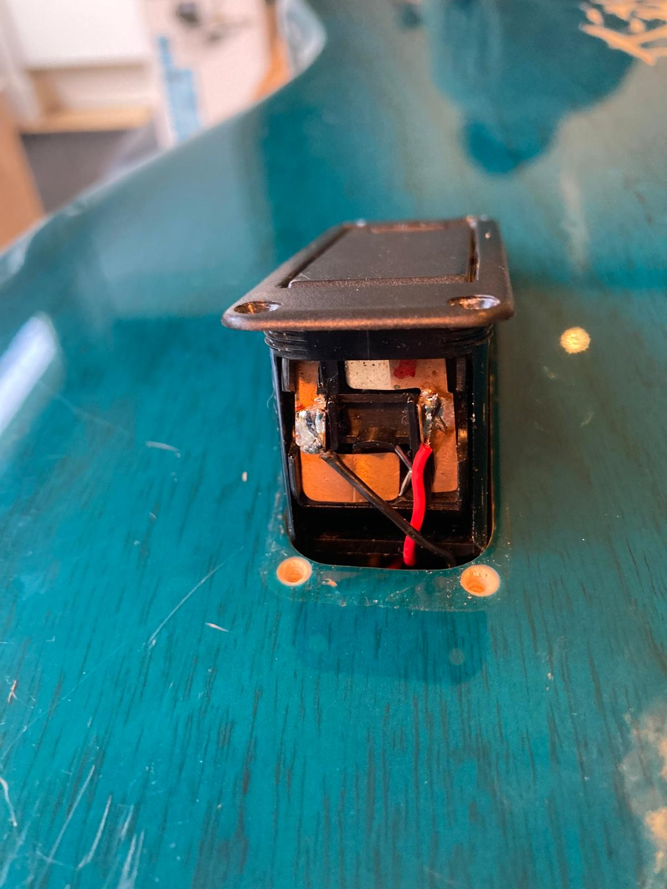
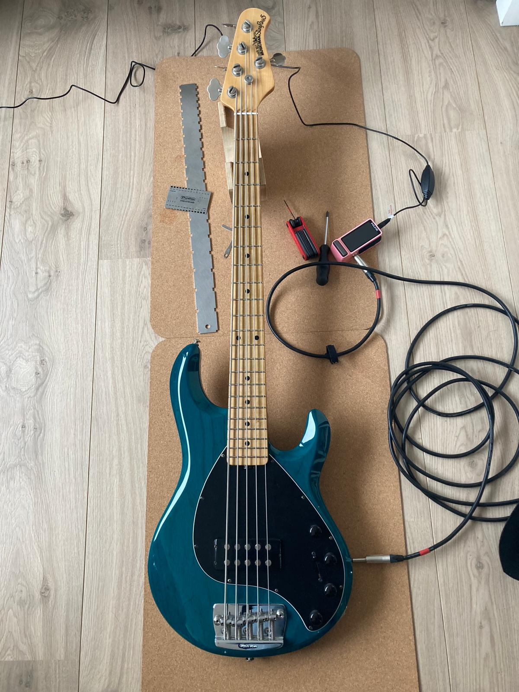

Reparaties
Voorbeeld bas electronica onderzoek en reparatie.
Deze Music Man StingRay 5 USA kwam binnen met het probleem dat er geen geluid meer uit kwam. De oorzaak bleek een gebroken verbinding in de batterijhouder te zijn. Deze is netjes opnieuw gesoldeerd en de rest van de elektronica nagelopen. Daarna is ook de hals afgesteld, de snaren wat lager gezet en de intonatie gecontroleerd.
Deze bas kan er weer tegenaan en Erwin is blij: De bas speelt echt heel lekker, en is een stuk lichter dan ik gewend was.
Heb je een probleem met je gitaar, neem gerust contact met me op.



